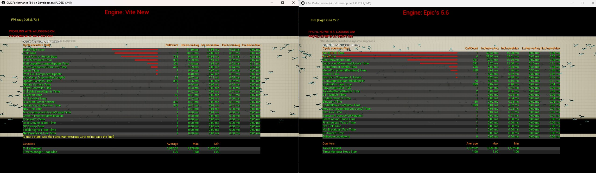

性能分析
在对场景进行优化之前，请先找到性能瓶颈。stat unit 命令可以告诉你哪个线程限制了帧数；后面的一切优化操作都由此展开。
模拟引擎的性能分析工具已经非常成熟，并且文档齐全。本页面将介绍如何在达到机器人模拟的性能目标下使用这些工具，以及值得关注的特殊事项。
首先使用 stat unit 命令
stat unit
这是每个分析会话中的第一个命令。它报告：
| 行 | 含义 |
|---|---|
| Frame | 总帧时间。这是您的实际帧速率。 |
| Game | 游戏线程: gameplay、节拍、物理、动画 |
| Draw | 渲染线程：构建绘制命令、RHI 提交 |
| GPU | GPU时间 |
| RHIT | RHI 线程, 存在的地方 |
Game、Draw 和 GPU 中最大的那个就是你的瓶颈。帧时间大致等于它，因为线程是并行运行的，最慢的线程会影响其他线程的运行。
这一读数决定了后续的一切。如果优化的线程不是瓶颈线程，帧率就不会有任何提升，这是虚幻引擎性能优化中最常见的浪费。
找出瓶颈
-
在接近最终发布版本的构建配置中，于典型场景运行
stat unit。 -
注意 Game、Draw 和 GPU 中哪个最接近 Frame。
-
使用
r.ScreenPercentage 50进行确认。如果帧时间显著下降，则说明您受限于 GPU 的像素级性能。如果帧时间几乎没有变化，则说明您不受 GPU 限制。 -
请参阅下面的相关内容。
游戏线程瓶颈
游戏线程是模拟引擎最常出现瓶颈的地方，也是模拟引擎相对于 UE5 最大的继承优势所在。
stat game // 顶层游戏线程细分
stat physics // 物理模拟成本
stat anim // 动画和骨架网格物体评估
stat engine // 节拍计数和一般引擎统计数据
stat slate // UI 成本
常见开销
参与者的节拍计数： 每个节拍操作的参与者都会消耗资源，即使是那些节拍操作本身没有任何作用的参与者也不例外。stat engine会报告节拍计数。禁用不需要节拍操作的参与者的节拍功能，并在节拍函数（Tick）内部使用节拍间隔而不是提前退出。
角色移动： 角色移动组件（Character Movement Component, CMC）开销很大，并且会随着角色数量的增加而急剧增加。400 角色 CMC 基准测试演示程序正是为了精确地衡量这一点而存在的。如果你有很多角色，这很可能就是你的主要开销。

物理引擎。 另请参阅PhysX。注意物理引擎的运行时间占游戏线程运行时间的比例。大量的模拟物体应该移动到实例化的子系统中。
重叠事件。 模拟引擎默认禁用图元组件的重叠事件，正是因为它们是常见的隐藏开销。另请参阅引擎默认设置更改。
蓝图。 蓝图虚拟机的执行速度比原生 C++ 慢。每帧的热点逻辑应该用 C++ 编写。
渲染线程瓶颈
stat scenerendering // 渲染线程崩溃
stat initviews // 可见性和剔除成本
stat rhi // 绘制调用、图元、三角形
渲染线程开销主要取决于绘制调用次数和可见性计算。
绘制调用次数： stat rhi 命令会报告绘制调用次数。可以通过实例化、网格合并以及减少每个网格的材质槽位来降低绘制调用次数。请注意，模拟引擎没有 Nanite，因此绘制调用纪律比 UE5 更为重要。
可见性： stat initviews 命令会显示剔除开销。过高的图元数量会使剔除本身开销巨大。预计算可见性和遮挡剔除会有所帮助；减少图元数量也能起到同样的作用。
GPU 瓶颈
stat gpu // GPU 通道细分
profilegpu // 详细的单帧 GPU 捕获
r.ScreenPercentage 50 // 像素成本界限的 A/B 测试
profilegpu 是最重要的工具。它会生成单帧渲染的每个通道的详细分析，从而告诉你 GPU 时间都用在了基础渲染、阴影渲染、光线追踪、后期处理还是其他意外情况上。
对于模拟引擎项目，值得仔细检查的渲染通道有：
| 渲染通道 | 说明 |
|---|---|
| 光线追踪通道 | 请参阅光线追踪。r.RayTracing.ForceAllRayTracingEffects 0 设置它们在帧中所占的比例。 |
| DDGI | 应该是温和、稳定的。另请参阅动态DDGI。 |
| 基础通道 | 由材料复杂性和透支驱动 |
| 阴影深度 | 由阴影投射光数和级联配置驱动 |
| 半透明性 | 由透支驱动。颗粒是常见原因。 |
| SMAA | 小而固定。如果很大，请检查r.Vite.SMAA.Mode。 |
查看模式
Viewport 视图模式通常比配置文件捕获更快地定位问题：
| 查看模式 | 解释 |
|---|---|
| Shader Complexity | 昂贵的材料和透支 |
| Quad Overdraw | 小三角形浪费 quad 占用 |
| Light Complexity | 重叠的动态灯光 |
| Lightmap Density | 光照贴图分辨率问题 |
| Wireframe | 失控的曲面细分和意想不到的几何密度 |
会话前端
窗口 > 开发者工具 > 会话前端 > 分析器会捕获一个可拖动的时间线，这是处理间歇性卡顿的理想工具。每 30 秒发生一次的卡顿不会显示在stat unit中。
模拟引擎项目中常见的卡顿来源：
- 首次遇到材质时着色器编译。请参阅着色器编译和 PSO。
- 大量几何体涌入时，光线追踪加速结构会构建。
- 物理体创建突发。请参阅实例化物理中的
MaxAddActorsPerFrame。 - 关卡流式传输和资源加载。
- 垃圾回收。
根据目标进行性能分析
只有结合预算，才能更好地理解某个数字。模拟引擎的性能目标为您提供了一个示例：
| 目标 | 帧预算 |
|---|---|
| 风格化 4K120 | 8.3 ms |
| 高性能 4K60 | 16.6 ms |
| 高保真 4K30 | 33.3 ms |
| 全高清 1440p30 | 33.3 ms |
 模拟 3000 个立方体，虚幻引擎 5.7 Chaos 帧率为 33.26 FPS，对比 PhysX 3.4 帧率为 157.88 FPS。
模拟 3000 个立方体，虚幻引擎 5.7 Chaos 帧率为 33.26 FPS，对比 PhysX 3.4 帧率为 157.88 FPS。
在符合最低配置要求的硬件上，使用开发或测试版本（而非编辑器）进行性能分析，并选择能够代表最坏情况的游戏场景（而非空关卡）。仅编辑器开销就可能达到几毫秒，而空关卡中的性能分析无法反映最终交付的帧性能。